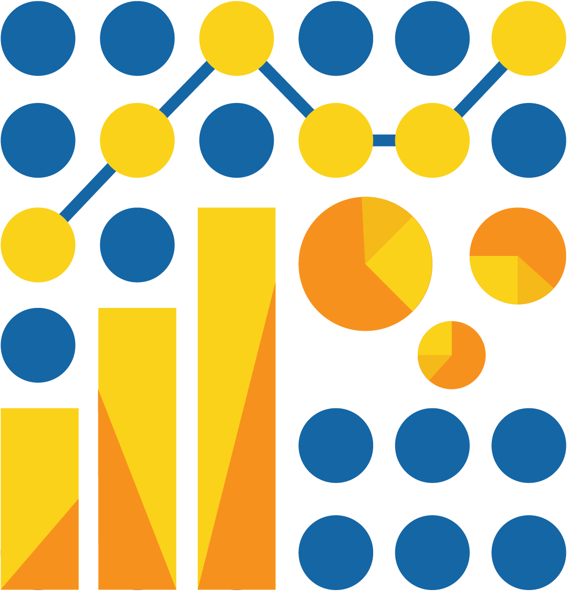
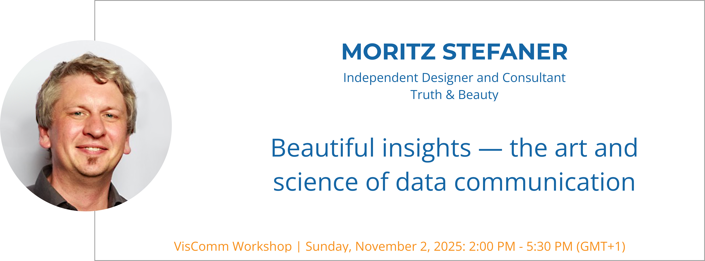

Workshop on Visualization for Communication
November 2, 2025 · Vienna, Austria

As a self-employed “Truth and Beauty Operator”, Moritz Stefaner keeps chasing the perfect shape for information. With a background in Cognitive Science and Interface Design, his work beautifully balances analytical and aesthetic aspects in mapping complex phenomena to support data–driven decision making. Moritz has helped clients like the OECD, Google News Initiative, Salesforce, the World Economic Forum, Deutsche Bahn and the Max Planck Research Society to find insights and beauty in large and complex data sets. He is the record winner of the Kantar Information is Beautiful awards and his work has been exhibited at Venice Biennale of Architecture, SIGGRAPH, Max Planck Science Gallery, Fondation EDF, and Ars Electronica. As a writer, co-host of the Data Stories podcast, and sought-after keynote speaker and workshop facilitator, Moritz Stefaner continues to excite more and more people about the magic that can emerge when art and science connect deeply.
With insights from high‑profile data communication projects, Moritz Stefaner examines the evolving role of human‑centered data design in an era of automation. When AI can produce “good enough” charts in seconds, where do full‑time data designers add irreplaceable value? The talk argues that visualization is not just syntax and semantics, but also pragmatics: tone, empathy, and cultural context. Drawing on work like Germany’s vaccination dashboard, OECD’s Better Life Index, and data physicalization experiments, Stefaner shows how design decisions shape meaning, behavior, and trust, and which design strategies actually create lasting value.
Calling all visual communicators! VisComm brings together practitioners and researchers from a wide range of disciplines to address pressing questions about how data visualization is evolving in our everyday lives. We particularly encourage participation from journalists, designers, health communicators, policy advocates, educators, and others who may not typically attend IEEE VIS but who play a vital role in shaping how data reaches the public.
This year’s theme is Elevating the Art of Public Data Visualization. We’re especially interested in work that explores visualizations in public service announcements, exhibits, physical formats, and other non-traditional media—visuals that aim to raise awareness, provoke reflection, or spark behavior change. We also emphasize the often-overlooked influence of style guides and design standards in shaping how public audiences perceive and trust visual content. Understanding how people interpret, trust, and act on visual information in real-world contexts remains a core concern.
The workshop will be held at the Austria Center Vienna, Bruno-Kreisky-Platz 1, 1220 Vienna, Austria, on Sunday, November 2, 2025 from 2:00 PM - 5:30 PM (GMT+1).
Session 1 – 2:00 pm to 3:30 pm (90 min)
2:00 – 2:10 Welcome + Speaker Intro – VisComm Committee (10 min)
2:10 – 3:00 Keynote – Moritz Stefaner (50 min)
Case Studies: Communication & Storytelling
3:00 – 3:07 Interactive Storytelling of Complex Systems Through Metaphor – Liuhuaying Yang (7 min)
3:07 – 3:14 The Sublime Ordinary: Visualizing an Archive of Soundscapes – Elina Oikonomaki (7 min)
Late Breaking Works
3:15 - 3:20 From Words to Visual Experience: A Large-Scale Linguistic Analysis of Engagement with Data Visualizations from 23,989 Verbal Descriptions - Rishika Shivnani (5 min)
3:20 - 3:25 Understanding Emotional Engagement for Data Visualization - Roxanne Ziman (5 min)
3:25 - 3:30 Session Closing (5 min)
Break – 3:30 pm to 4:00 pm (30 min)
Session 2 – 4:00 pm to 5:30 pm (90 min)
Part A – Tools & Techniques
4:00 – 4:07 Building Better Data Visualization Style Guides: A Centralized Resource for Professionals – Jon Schwabish (7 min)
4:07 – 4:19 Making Data Harder to Read: Visualizations that Intentionally Increase Time and Effort – Leni Yang (12 min)
4:19 – 4:31 AROM: Rambling Along Data in Augmented Reality to Explore Large Orders of Magnitude Values – Aymeric Ferron (12 min)
Part B – Foundations & Perception
4:31 – 4:43 Visualization Literacy or Skillset? Beyond the Analogy to Textual Literacy – Mara Solen (12 min)
4:43 – 4:55 We Need to Talk (more) About Numeracy! Toward a Numeracy-Informed Visualization Design Process – Katerina Batziakoudi (12 min)
4:55 – 5:07 Identifying Framing Practices in Visualization Design Through Practitioner Reflections – Prakash Shukla (12 min)
5:07 – 5:19 Understanding Bias in Perceiving Dimensionality Reduction Projections – Seoyoung Doh (12 min)
5:19 – 5:30 General Q&A, discussion, and closing remarks (11 min)
2–6 pages. Present original research with reproducible, evidence-based claims.
2–6 pages. Share critical perspectives or methods relevant to public-facing visualization.
1-page + media. Showcase real-world work, including process, goals, and impact.
1-page. Share early-stage ideas or practices and gather feedback from attendees.
We invite submission of research papers between 2 and 6 pages long, including references, with length matching content. Research papers will be reviewed based on how well claims are supported by evidence. Submissions are expected to include all materials and data needed to replicate and reproduce any figures, analyses, and methods. If anything cannot be publicly shared (e.g., for data privacy concerns), state the reason in the paper.
We invite submission of position papers between 2 and 6 pages long, including references. Position papers are problem discussions or statements describing the author's relevant experience and ideas regarding methods and methodologies for visualization research, particularly around the workshop theme. They will be selected for relevance, importance, and how well they support planned discussions.
We invite practitioners to submit a one-page write-up along with a link to an online piece or a short video. The write-up should explain what was made, why it was made, and its outcomes or responses—both expected and unexpected. Ideal for journalists, designers, public sector workers, and advocates.
This category is for early-stage work and contributions that would benefit from community feedback.
For researchers: Suggested structure includes: introduction, preliminary methods, early findings (if any), and key questions for attendees.
For practitioners: Include project background, design goals, process/methods, and links to any prototypes or alternatives. Share insights and pose open questions to participants.
All submissions must be in PDF format and follow the VGTC conference style, available in LaTeX and MS Word. Replace the IEEE copyright statement with: "This work is licensed under a Creative Commons Attribution 4.0 International License."
Submissions must include full author names and affiliations. Optional short videos (max 5 minutes) are welcome. Submissions will be juried by the workshop organizers. At least one author per accepted submission must register for IEEE VIS 2025, even if only attending the workshop.
All accepted submissions will be posted on the workshop website.
Authors of accepted submissions may choose whether to archive their work on IEEE Xplore or instead post it on the Open Science Framework's preprint archive, following the instructions we provide. OSF workshop papers are not considered archival by IEEE and may be published elsewhere at a later date. We welcome early posting of papers and understand that some authors—particularly those from non-engineering fields—may have different norms around prior publication. Please contact the chairs with any questions about publication preferences or requirements.
Presenting authors can make use of a reduced workshop-only registration fee at IEEE VIS. Additionally, the IEEE VIS Inclusivity & Diversity Scholarship Committee provides complimentary conference registration based on need.
Deadlines occur at 11:59 PM in the last timezone on Earth.
The quickest way to contact VisComm's organizers is via their shared email, viscomm_chairs@googlegroups.com
Alvitta Ottley, Washington University in St. Louis
Jonathan Schwabish, Urban Institute
Paul Parsons, Purdue University
Ali Baigelenov, Purdue University
Md Dilshadur Rahman, University of Utah
Prakash Shukla, Purdue University
Saugat Pandey, Washington University in St. Louis
2023 schedule, papers and posters
2022 schedule, papers and posters
2021 schedule, papers and posters
2020 schedule, papers and posters
2019 schedule, papers and posters
2018 schedule, papers and posters